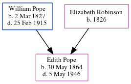

Edith Abigail Pope 1864 - 1946
[ Home ] | [ Calendar ] | [ Surnames Index ] | [ Census Index ] | [ Family History ]An assistant in hotel and the child of William Pope (a builder) and Elizabeth Robinson, Edith Pope, the second cousin three-times-removed on the father's side of Nigel Horne, was born in Folkestone, Kent, England on May 30, 18641,2,3,4,5 and baptized there at Ss Mary & Eanswith Church on Jun 22, 1864.
During her life, she was living at Fancy Street in Folkestone on Apr 2, 18711; at East Cliff Gardens in Folkestone on Mar 31, 19017 (when she was living with her); at Marine Crescent in Folkestone on Apr 2, 19112; at 28 Cheriton Road in Folkestone on Sep 29, 19393; and at 188 Godington Road, Ashford, Kent, England in 1946 which is where she died on May 55,6. She was buried in Hawkinge, Kent, England on May 9, 1946.
Parents
- William was born on Mar 2, 1827
- Elizabeth Ann was born in 1826
Citations
- 1871 England, Wales & Scotland Census - Findmypast (was age 6 and the daughter of the head of the household)
- 1911 Census for England & Wales - Findmypast (was age 46 and a niece in the household)
- 1939 Register - Findmypast (was recorded at this address)
- England & Wales births 1837-2006 - Findmypast
- England & Wales deaths 1837-2007 - Findmypast
- England & Wales Government Probate Death Index 1858-2019 - Findmypast
- 1901 England, Wales & Scotland Census - Findmypast (was age 36 and a niece in the household)
Media
Edith Abigail Pope - Probate

Edith Abigail Pope - Burial Record

1911 Census for England & Wales - GBC/1911/RG14/04629/0397/4
England Births & Baptisms 1538-1975 - R_884242875
England & Wales births 1837-2006 - BMD/B/1864/2/AZ/001020/152
1901 England, Wales & Scotland Census - GBC/1901/0005548139
England & Wales deaths 1837-2007 - BMD/D/1946/2/AZ/000724/032
1939 Register - TNA/R39/1722/1722I/010/22
England & Wales Government Probate Death Index 1858-2019 - GBOR/GOVPROBATE/C/1946-1946/00150161
Family Tree
Generated by ged2site. Last updated on Jun 11, 2024